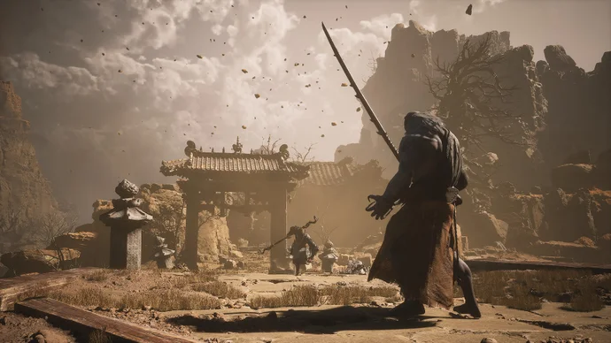
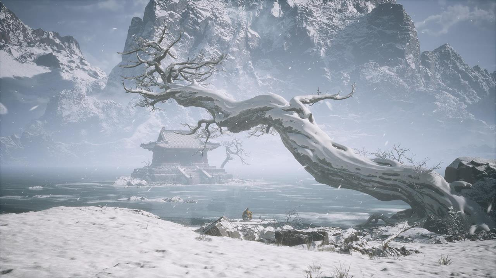
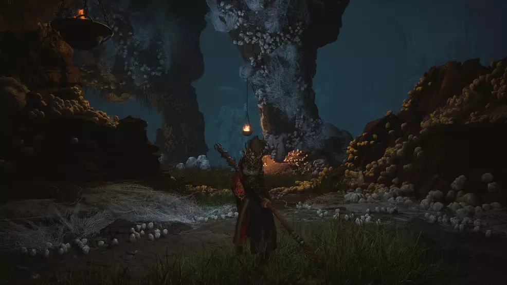
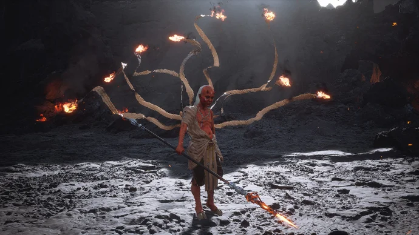
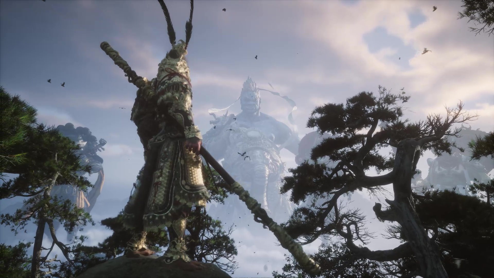

Guia dos capítulos principais
Guia e Exploração

Capitulo 1
Local:Montanha do Vento Negro
Ambiente: Florestas densas, bambuzais e cavernas sombrias
A área inicial, coberta de neve e patrulhada por soldados e lobos.

Capitulo 2
Local: Crista do Vento Amarelo
Ambiente: Zona árida com desfiladeiros, e muito vento
A mudança de cenário transmite: “saímos da floresta e entramos em terra mais árida e exposta”.

Capitulo 3
Local: Novo Oeste
Ambiente: Região de neve e montanhosa, áreas elevadas
errenos íngremes, ambientes amplos, e o sentido de “terceiro ato” que amplia escala: você já domina o básico, agora vem o ambiente maior e mais hostil.

Capitulo 4
Local: Crista das Teias
Ambiente: Área subterrânea e labiríntica, cheia de teias, insetos e cavernas
Fique atento aos “espaços verticais” — subir/baixar será importante, não só andar; lugares que parecem “laterais” podem esconder caminhos.

Capitulo 5
Local: Montanhas Flamejantes
Ambiente: Montanha de fogo, lava, cinzas e calor extremo
O ambiente chama atenção para perigo ambiental: não só inimigos, mas terreno que te afeta (calor, líquido incandescente, detritos que caem).

Capitulo 6
Local: Monte Huaguo
Ambiente: A Montanha das Flores e Frutas
Local icônico da mitologia — o “Mount Huaguo” (Montanha das Frutas e Flores) aparece como destino ou palco de resolução.